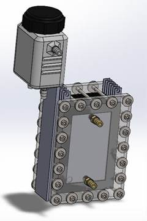
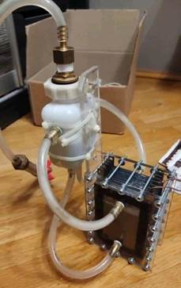
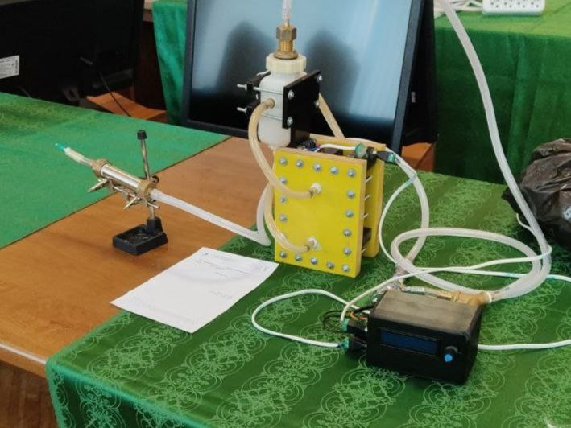

Hydrogen reactor


The production and use of hydrogen fuel are promising areas for the development of hydrogen technologies. Among its main advantages over carbon-containing fuels is its inexhaustibility, environmental friendliness and relative ease of obtaining it. This paper presents an operating device in which the main unit is a hydrogen reactor (electrolyzer), the main function of which is the production of hydrogen fuel. In the course of the work, the theory of electrolysis was studied, a hydrogen reactor (electrolyzer) was developed and assembled to create Brown's gas.
A system of protection measures and safe use of the reactor has been thought out.
We also managed to estimate the fuel generation rate, which was .
According to our estimate, the plant efficiency was 24%.
Based on the analysis of the operation of the first version of our Brown generator and additional information search, a new reactor was designed and its efficiency was evaluated. In this version
The efficiency was 67% and this confirmed the correctness of our conclusions.
Thus, we can say with confidence that all tasks have been completed, the goal has been achieved. The hypothesis about the possibility of creating a hydrogen generator at home has been confirmed.
In the future, I plan to make a printed circuit board for the electronic control system, increase the maximum pressure the reactor can withstand by filling all weak spots with epoxy resin, and equip a fuel storage tank. In addition, the reactor will be prepared for full autonomous operation.